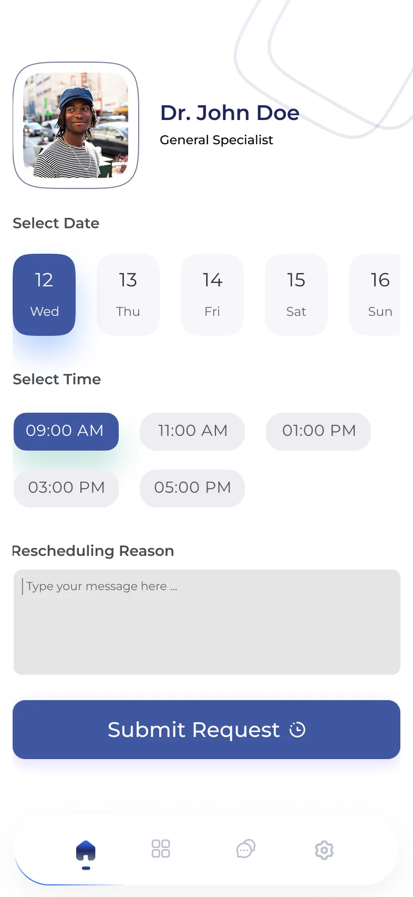
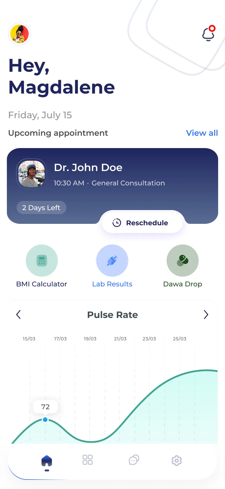
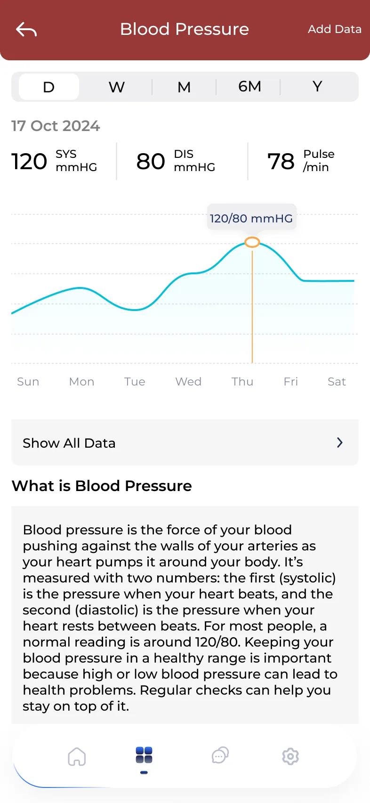
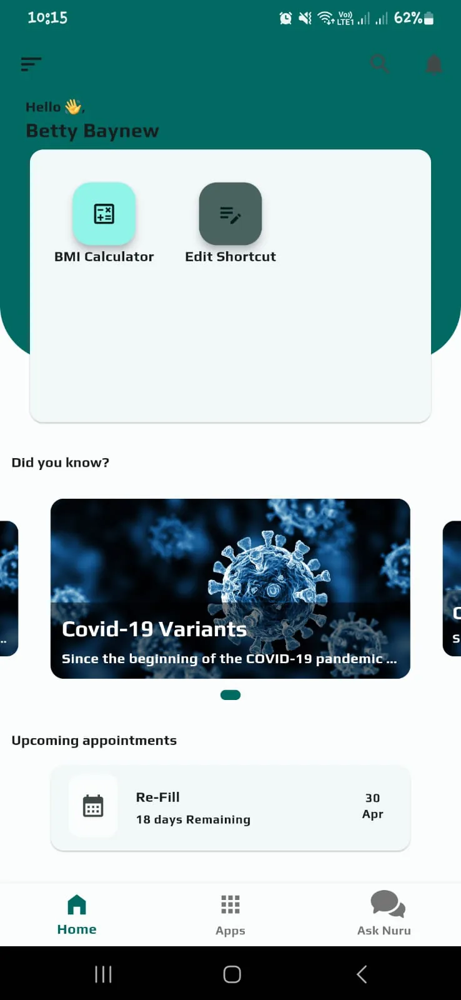
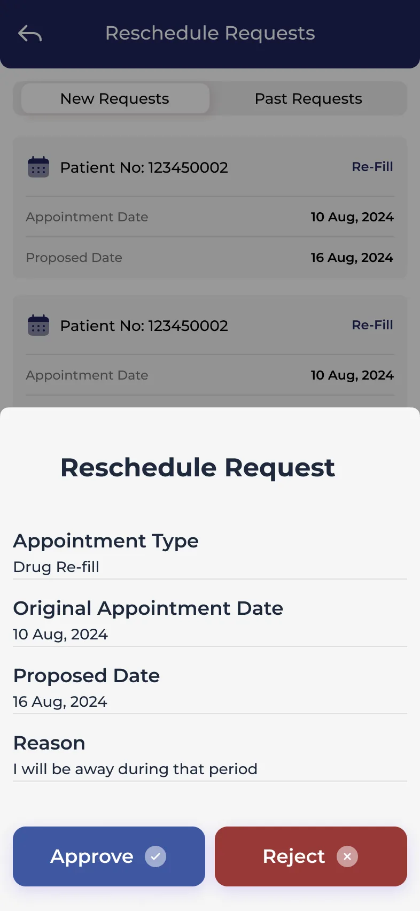
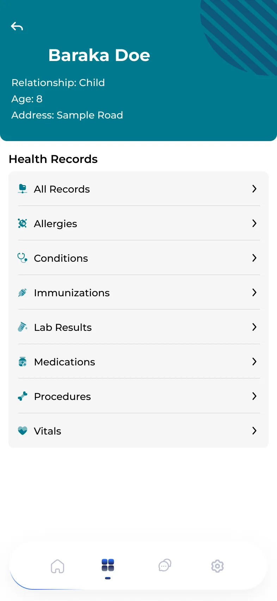
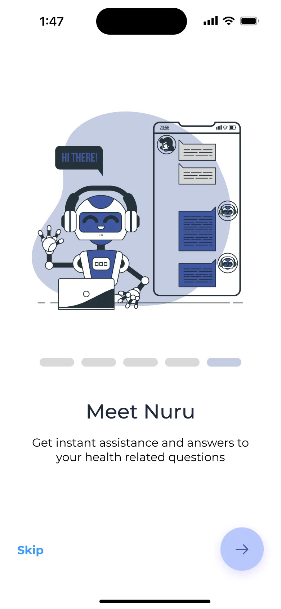

Nishauri is the patient app that sits alongside KenyaEMR, the medical record used in health facilities across Kenya. Patients use it to see their appointments, ask for a new date, follow their readings and read their health records. At Palladium I led its redesign, built in Flutter as one app for iOS and Android.
The home screen led with a news carousel and two shortcuts. The one thing most patients open the app for, their next appointment, sat at the bottom.
A home that leads with the next appointment, rescheduling as a request the clinic answers, and readings explained in plain words. Satisfaction with navigation and ease of use rose 55% in beta surveys.
Before and after
the home screen
The old home gave its top half to a card with two shortcuts and its middle to health news. The next appointment came last, as a single line.
The redesign turns that order around: who you're seeing, when, how many days are left, and a button to reschedule, before anything else.

What changed
three moves
Lead with the next visit
The appointment card opens the home screen: the provider, the time, the type of visit and a countdown, with Reschedule attached.
Make rescheduling a request
Patients pick a date and a time and give a reason. The clinic sees each request with the original and proposed dates, and approves or rejects it.
Explain the numbers
Readings like blood pressure show by day, week, month or year, with what the numbers mean written in plain words underneath.
Try it
move an appointment
Both sides of a reschedule. Ask for a new date as Magdalene, then answer the request as the clinic, and watch her home screen change.
Around the app
for patients and clinics
A few more screens from the redesign. Click any one to see it full size.



Outcome
what changed
- Satisfaction with navigation and ease of use rose 55% in beta surveys.
- Shipped as one Flutter app for iOS and Android.
- Rescheduling became a request the clinic answers, with the original date, the proposed date and the reason in one place.